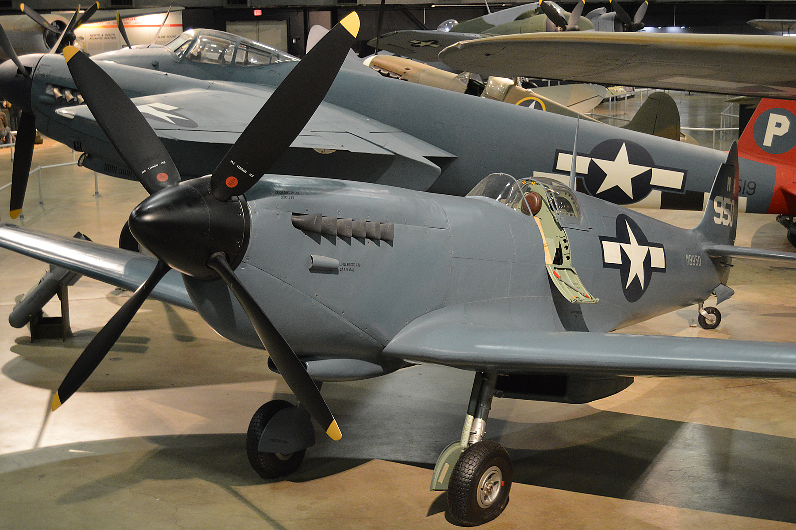
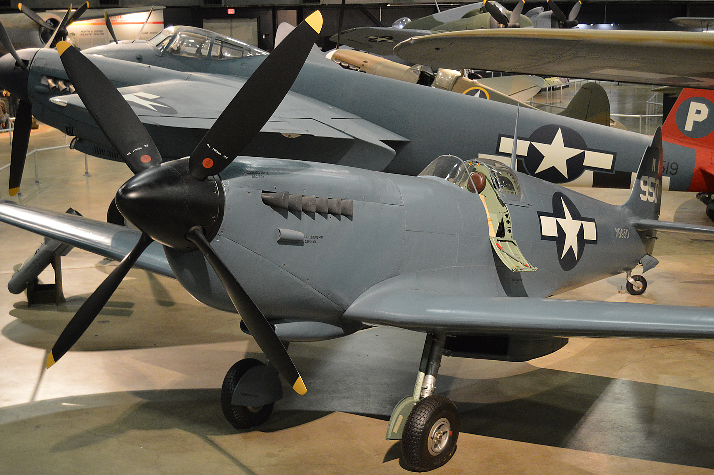
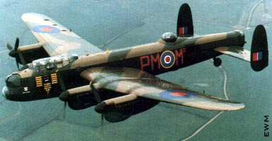
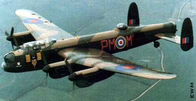
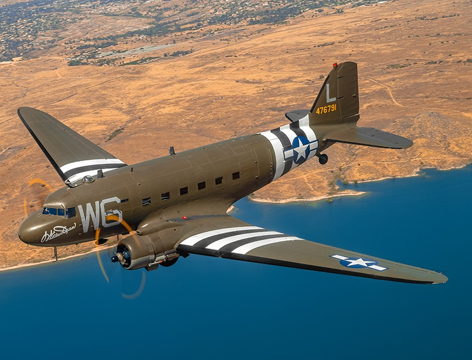

click para
reproducir
audio

Después del histórico vuelo de los hermanos Wright, la aviación experimentó un rápido desarrollo y crecimiento. Desde la Primera Guerra Mundial hasta la exploración espacial, la historia de la aviación está llena de hitos y avances tecnológicos sorprendentes.
Los aviones comenzaron a utilizarse durante la Guerra Mundial para misiones de reconocimiento, pero rápidamente evolucionaron hacia el combate aéreo. La necesidad de neutralizar las aeronaves enemigas llevó al desarrollo de los primeros cazas. El *Fokker Eindecker* alemán fue uno de los primeros en incorporar un mecanismo de sincronización que permitía disparar a través de la hélice. Este avance tecnológico marcó un hito en la guerra aérea y otorgó a Alemania una ventaja significativa en las primeras etapas del conflicto. En respuesta, los Aliados desarrollaron modelos como el *Sopwith Camel, que destacó por su maniobrabilidad y capacidad para adaptarse a las condiciones de combate. En esta época surgió el concepto de "ases", pilotos que lograban cinco o más derribos, siendo el Barón Rojo (Manfred von Richthofen) uno de los más famosos.
El éxito inicial del poder aéreo estadounidense se debió al esfuerzo de tres figuras principales: Raynal Bolling Contribuciones clave: Abogado y miembro de la Guardia Nacional, Bolling organizó el 1er Escuadrón Aéreo de Reserva y lideró una misión a Europa para determinar los aviones que debían fabricarse en Estados Unidos. Logros en Europa: Bolling identificó que Estados Unidos estaba demasiado atrasado tecnológicamente en aviación y negoció con Francia la adquisición de aviones modernos, como el SPAD XIII y el Breguet 14. Legado: Bolling se convirtió en un arquitecto del poder aéreo y murió en combate en 1918, convirtiéndose en uno de los primeros héroes de la aviación militar estadounidense. Benjamin Foulois Padre de la Fuerza Aérea: Foulois fue un pionero que aprendió a volar con la ayuda de los hermanos Wright. Diseñó la estructura básica de los escuadrones aéreos, consistentes en 150 hombres sin incluir pilotos. Movilización: Supervisó la creación de centros de entrenamiento, como Kelly Field en Texas, que transformaron reclutas en aviadores. Su enfoque en la estandarización permitió una rápida expansión de la aviación militar. Billy Mitchell Estratega brillante: Mitchell fue enviado a Francia para estudiar las tácticas aéreas de los aliados. Su conocimiento del idioma francés y su habilidad para aprender rápidamente lo convirtieron en el comandante operativo principal de la aviación estadounidense. Contribuciones clave: Lideró operaciones exitosas como la ofensiva de Saint-Mihiel y la Segunda Batalla del Marne, demostrando cómo el poder aéreo podía transformar el curso de las batallas.
Aunque el entusiasmo público y del Congreso por la aviación permitió una inversión sin precedentes de 640 millones de dólares, los desafíos eran enormes: Producción limitada: La industria estadounidense no podía fabricar aviones competitivos a gran escala. La mayoría de los aviones utilizados en combate fueron adquiridos en Francia, Gran Bretaña e Italia. Falta de experiencia: La movilización de aviadores y personal técnico tuvo que desarrollarse desde cero. Esto implicó un enfoque sistemático para entrenar, organizar y desplegar escuadrones. Tecnología atrasada: Los diseños estadounidenses no estaban a la altura de los modelos europeos. Por ejemplo, el SPAD XIII y el Nieuport 28 franceses fueron esenciales para las misiones de combate.
La Segunda Guerra Mundial fue una guerra que involucró al mundo entero y tuvo un gran impacto en la historia y la tecnología. Los aviones juegan un papel importante en la guerra, la planificación y la tecnología. En este artículo veremos las figuras más emblemáticas de la Segunda Guerra Mundial y su papel en la planificación militar, los tipos más populares y algunos datos interesantes sobre ellos. Antecedentes Antes de la Segunda Guerra Mundial, los aviones se fabricaban principalmente de madera y tela. Sin embargo, durante la guerra, el aluminio y otros metales se utilizaron más ampliamente por su durabilidad y resistencia a la corrosión. Los motores también se han mejorado para proporcionar mayor velocidad y capacidad de carga.
Antes de profundizar en los detalles de los aviones de la Segunda Guerra Mundial, es importante comprender la tecnología que condujo a su desarrollo. La Segunda Guerra Mundial fue una época en la que la tecnología aeronáutica creció rápidamente y los aviones se desarrollaron más rápidamente para satisfacer las necesidades de la guerra.
Los motores de combustión interna fueron los principales motores de los aviones de la Segunda Guerra Mundial. Las pistolas de pastelería eran comunes en los primeros años de la guerra, pero las pistolas eléctricas se convirtieron en tecnología clave al final de la guerra.
Los aviones de combate de la Segunda Guerra Mundial estaban equipados con armas de fuego, cañones y bombas. Las armas debían destruir objetivos en tierra o en otros aviones. Algunos aviones también se utilizaron para transportar tropas o suministros.
Las comunicaciones y la navegación mejoraron drásticamente durante la Segunda Guerra Mundial. Los aviones pueden comunicarse entre sí y con los pilotos en tierra y permitir que los pilotos naveguen para llegar a su destino con precisión.
El avión de combate había sido preparado para el combate por otra compañía. Estos aviones son rápidos, maniobrables y fuertemente armados. Algunos de los cazas más famosos de la Segunda Guerra Mundial fueron el Messerschmitt Bf 109, el Spitfire y el P-51 Mustang.
 


Los bombarderos son aviones diseñados para atacar objetivos terrestres. Estos aviones están equipados con cientos de bombas y pueden volar por el aire. Algunos de los bombarderos más famosos de la Segunda Guerra Mundial fueron el B-17 Flying Fortress, el Lancaster y el B-29 Superfortress.
 


Se utilizaron vehículos de transporte para transportar tropas, suministros y equipo militar. Estos aviones son grandes y fuertes y están diseñados para volar largas distancias. Algunos de los aviones de transporte más famosos de la Segunda Guerra Mundial fueron el C-47 Dakota, el Ju 52 y el Douglas DC-3.


Se utilizaron aviones de reconocimiento para recopilar información sobre las fuerzas enemigas y su ubicación. Estos aviones están equipados con cámaras y otros equipos de vigilancia. Algunos de los aviones de exploración más famosos de la Segunda Guerra Mundial fueron el Spitfire PR y el Focke-Wulf Fw 189.


| Avión | Función Militar |
|---|---|
| Spitfire | El Spitfire fue uno de los aviones más emblemáticos de la Segunda Guerra Mundial. Fue utilizado en la Batalla de Gran Bretaña y utilizado por la Royal Air Force (RAF) británica durante su conquista. Era rápido y maniobrable, lo que le permitía contrarrestar eficazmente los aviones alemanes. |
| Messerschmitt Bf 109 | El Messerschmitt Bf 109 fue uno de los aviones utilizados por la Luftwaffe durante la Segunda Guerra Mundial. Era un avión rápido y maniobrable apto para el combate aéreo. El avión fue el avión más numeroso derribado por aviones británicos en la Batalla de Gran Bretaña. |
| Mustang P-51 | El P-51 Mustang fue uno de los aviones más importantes de la Fuerza Aérea de los Estados Unidos durante la Segunda Guerra Mundial. Los bombarderos los siguieron con frecuencia y durante el tiempo suficiente para seguirlos hasta Alemania. También se utiliza en misiones de reconocimiento y combate aéreo. |
| Messerschmitt I 262 | El Messerschmitt Me 262 fue el primer avión militar que entró en servicio en la Segunda Guerra Mundial. Es utilizado por la Luftwaffe en misiones de reconocimiento y combate aéreo, y tiene una velocidad máxima de más de 800 km/h. Sin embargo, su producción fue mínima y no tuvo un impacto significativo en el resultado de la guerra. |
| B-17 Flying Fortress | El B-17 Flying Fortress fue uno de los aviones más importantes de la Fuerza Aérea de los Estados Unidos durante la Segunda Guerra Mundial. Era un bombardero pesado, capaz de transportar una gran cantidad de bombas y con buena resistencia. Fue utilizado para bombardear objetivos estratégicos en Europa y Asia. |
| Focke-Wulf Fw 190 | El Focke-Wulf Fw 190 fue uno de los aviones utilizados por la Luftwaffe durante la Segunda Guerra Mundial. Era un avión rápido y bien blindado, apto para el combate aéreo. Se utiliza en diversas misiones para evitar que los bombarderos ataquen objetivos terrestres. |
| Avro Lancaster | El Avro Lancaster fue un bombardero pesado utilizado por la Royal Air Force durante la Segunda Guerra Mundial. Se utiliza para bombardear objetivos estratégicos en Europa y Asia y tiene una gran capacidad de carga útil. También se utiliza en misiones de reconocimiento y transporte de suministros. |
| Zero | La Armada japonesa utilizó El Zero un avión de combate durante la Segunda Guerra Mundial. Es un avión ágil y bien armado, apto para el combate aéreo. Se utiliza en diversas misiones para evitar que los bombarderos ataquen objetivos terrestres |